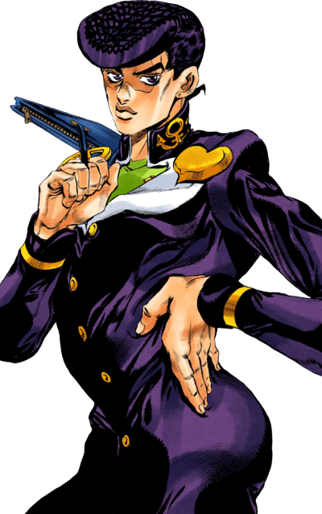
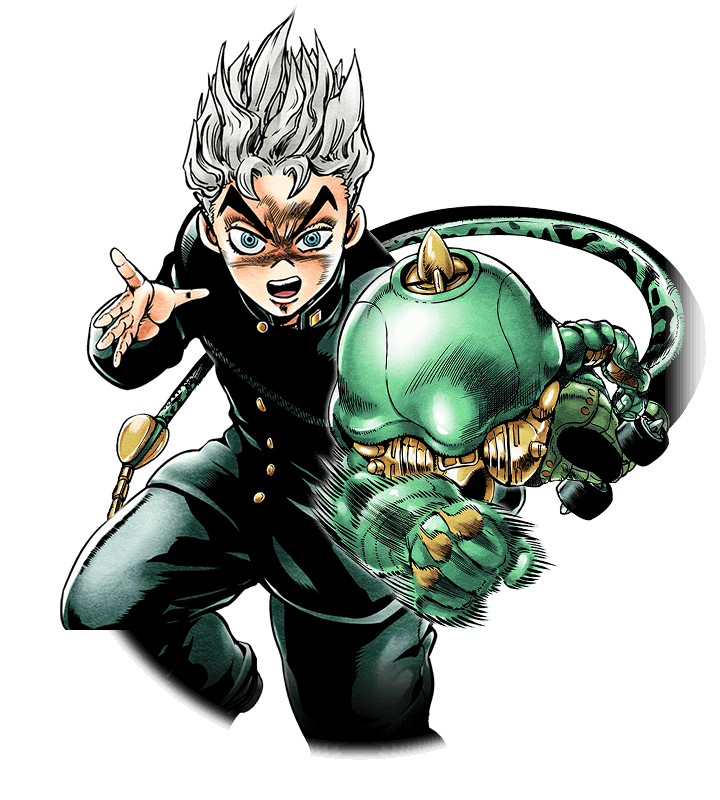

Diamond Is Unbreakable is the fourth part of JoJo's Bizarre Adventure. It was serialized in Weekly Shonen Jump from 1992 to 1995 and adapted into an anime by David Productions in 2016. A live action film was made as well by Toho studios and Warner bros. releasing in 2017.
This part follows Josuke Higashikata, a high school student in the town of Morioh, and
his companions as they uncover the mysteries surrounding their town while battling Stand users.
Jotaro Kujo arrives in Morioh to inform Josuke, the illegitimate son of Joseph Joestar, about
his
heritage. Josuke,
whose Stand Crazy Diamond can repair and heal, teams up with Jotaro after defeating the Stand
user
Angelo, who
reveals
the existence of a Bow and Arrow capable of granting Stands.
Josuke's group, including Koichi Hirose and Okuyasu Nijimura, confront various Stand users, many
of
whom were
created by
Okuyasu's late brother Keicho in an attempt to end their father's monstrous existence. After
recovering the Bow and
Arrow from Akira Otoishi, the group faces new threats, including eccentric manga artist Rohan
Kishibe, and other
unique
stand users.
Their encounters eventually lead them to uncover the
presence of a serial killer, Yoshikage Kira, who uses his Stand Killer Queen to cover up his
crimes
and maintain a
quiet life. The conflict intensifies when Kira, exposed by his murder of Shigekiyo, assumes a
new
identity and gains allies,
including a hybrid Stand-plant called Stray Cat. After killing Hayato Kawajiri, the son of his
assumed identity,
Kira in his panick gains a new ability, Bites the Dust, which rewinds time and ensures his
identity
remains hidden. However, Hayato
exploits this power to expose Kira to Josuke and his allies.
In the climactic battle, Josuke, Okuyasu, and Hayato face off against Kira, who uses Stray Cat to create invisible bombs. Despite heavy losses and near-death experiences, the group outmaneuvers Kira, and Jotaro delivers the final blow with Star Platinum. Kira is killed when he is accidentally struck by an ambulance, and his ghost is dragged into an unknown fate by spectral hands in Ghost Alley. With the killer defeated and peace restored to Morioh, the group bids farewell to Reimi Sugimoto, a ghost whose guidance helped them in their quest. As summer ends, Jotaro and Joseph leave Morioh, and Josuke reflects on his experiences and the bonds he formed.


Comments